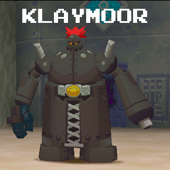

Overview
Megaman's just gotten hold of the key that lies in Nino Ruins, and is ready to make his way back to the surface. However, Bola's partner, Klaymoor, isn't too happy about this, and is ready to fight you over it. Klaymoor's a lot more serious than his laid-back counterpart, and his fighting style reflects this. Bola's attacks were often indirect, and not as straightforward, where as Klaymoor sits in one position and has numerous ways to attack his opponent from one position.
You fight Klaymoor twice, like Bola, and he's a bit more difficult the second time. As mentioned before, Klaymoor's position is stagnant for the most part (he jumps once during one of his moves), and he attacks with a powerful arm cannon that's pretty darn accurate, despite the fact that you may be circling him. His other moves are meant to trap/corral you so that you're left open for one of his more powerful techniques.
Movelist
Arm Cannon "Hey hey hey!"
Klaymoor's most common technique is to fire his arm cannon at your current position, and he also changes his aim every few shots. If you're circling him, he'll fire ahead so that you'll run into his shots (this guy's pretty smart!). Good dodging helps a lot with this move. Note that you can stand right in front of him, causing him to fire at the floor, missing you altogether, in which case you can drill him for an easy KO. Klaymoor uses this move in both fights.
Sparker "This will slow you down!"
Klaymoor fires multiple sparks from his back. These travel slowly, moving in towards you. If they catch you, they'll inflict the paralyze status on you should you lack a Light Barrier. This isn't good, as you'll be more vulnerable to his other moves. Klaymoor only uses this move in the first encounter.
Finishing Beam "Heave Ho!"
This attack is so rare that you more than likely won't see it unless you drag the fight on for some length of time (and even then, it's still rare). Klaymoor seems to do this after you get hit by the Sparker, and rightly so, because this move does quite a bit of damage. Klaymoor jumps (it's not a high jump), crosses his arms, and fires a double-helix style beam. This thing is downright lethal if it hits you, but TBPH it's quite easy to roll out of the way. Klaymoor only uses this move in the first encounter.
Energy Disc "Heads up!/Dodge this!"
Klaymoor rears his arm back and tosses a pink Frisbee-like projectile. This flies around the room, homing in on you after a couple of seconds. You have to really watch this one, as it's easy to forget about it momentarily and get smacked a few seconds later. This move is only used in the second encounter.
Bomb Shooter/Bomb Drop "Ho ho ho!/Boom!"
Klaymoor occasionally fire multiple red bombs into the air, which float there during the fight. You have to watch out for these when you're running around, as you could potentially smack into one. Klaymoor can call a few of these down and have them drop on your current position, although this can be easily avoided by simply running. This move is only used in the second encounter.
Belt Laser "This one's for you!"
Taking a page out of Juno's book, Klaymoor fires a twin, spiraling laser out of his mid-section. Unlike Juno, however, this version's a lot more unpredictable, and moves vertically as well, so the old jumping technique won't work here. If anything, a well timed roll is the best option here. This move is only used in the second encounter.
Good Weapons to Use
Drill Arm
This thing is infamous for being able to kill Klaymoor with little to no effort. Just stand next to Klaymoor, press Triangle, PROFIT! Of course, this sucks the fun out of the fight IMO, but do what you feel is best.
Synopsis
This was a pretty interesting boss; although he never actually moves, he has quite an arsenal and can give you a run for your money if you're unprepared. I liked his demeanor as well, as it was an interesting contrast to the laid-back Bola, and the two characters complimented each other quite well. His battle theme was a pretty catchy remix of the Nino Ruin theme, which was pretty nifty. Klaymoor rates a 9/10!